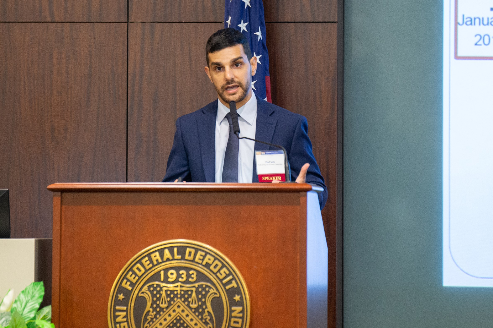

Welcome to my website! My name is Xiaolin and I'm a senior undergraduate student in IEEE pivot class, Shanghai Jiao Tong University. In fall 2023, I will persue a master degree in computer science in SJTU.
My research focuses on theoretical computer science (TCS). Currently I mainly aim at fair division problem, where fairness notions like EF1 and EFX, socail welfare, strategy-proofness and new models like online fair division are taken into consideration. I am also interested in programming language and software analysis. Feel free to look at my research page and my tutorials to learn more!
If you have any questions or similar interests to me, please do not hesitate to contact me through my email.